中風寺奥の院；その2/京都府美山町
さて、皆さん休憩はお済みですか？
それでは再びめくるめくバーチャル巡礼への旅へと出かけましょう。
ええと…百観音堂を出て池まで行ったんですよね?
お次は千人堂と称する建物へと参ります。
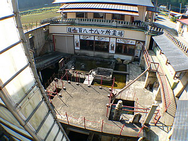
この千人堂、遠目に見れば平屋の建物だが、池から見ると2階建て、しかも中に入ると結果3階建てだったりするこれまた複雑怪奇な建物。あくまでも普通の建物なんぞ造りませんよ！という建設者の意気込みがビンビン伝わってくる建物だ。
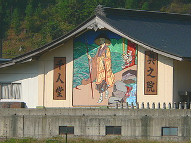
池の部分に設えられたキャットウォークからこの建物に入る。
と、そこにはいきなり広大な空間が。
眼下に外の池の水をそのまま引き込んだ屋内池がある。
え〜と。今いるのはこの建物の池のレベルを1階とすれば2階に相当するレベルに居ることになる。
階段を降りて池のある1階に向かおう。
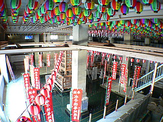 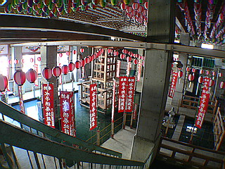
1階の池の中央には櫓が組まれており、しかも吹き抜けとなっている2階の天井にはコレでもか！という位に提灯が下がっており、まるで盆踊り会場のような水上ダンスフロア状態となっている。幟には水子供養地蔵尊と染め抜かれてましたけどね…
その合間を縫って石に刻まれた四国八十八ヶ所の写し本尊が刻まれた石碑がズラリと。
先ほどの建物が百観音堂であったのに対しこちらは四国八十八ヵ所の巡礼堂。つまり池を挟んだ二つの建物を廻ると百八十八ヶ所の壮大な旅路をトレースする事になるのだ。
そして味のあり過ぎる大日如来がリプライズ。もちろんナイスなイラストも標準装備。
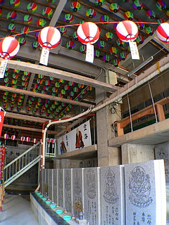 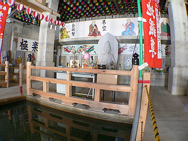
そんなこんなで千人堂もクリア。
ちなみに上の階には体育館みたいなガラーンとしたところに何故かカエルの置物がたくさん並んでました…
ああ、そういえば入口付近に焼物の工房らしき建物があったなあ。
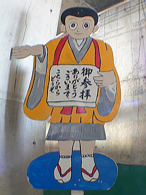
千人堂を出ると最初の入口付近に戻る。2つの建物にどれ位篭っていたのかと思ったが実際には1時間もいませんでした。
まるで半日以上は居たのではないかと思わせるほど、歪んだ時間と空間が支配する場所だった。
さて、気を取り直して先へ進もう。
まだ訪れるべき仏堂はいくつもあるのだ。
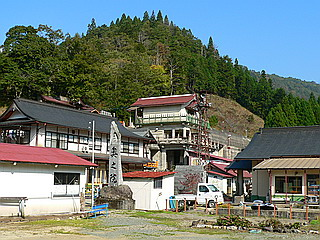 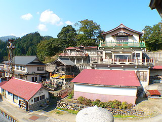
この奥の院で一番目立つであろう建物に行ってみる。
3階建てだが斜面に建てられているので、1階2階3階とそれぞれ別の入口から中に入るようになっている。
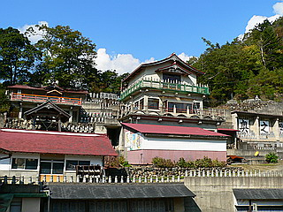 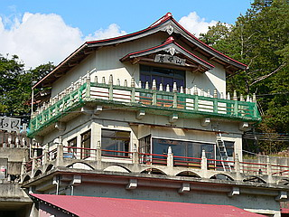
あくまでも各階とも違う経路でアプローチさせなければ気が済まないのだろう。
その猛烈な意図を感じた。
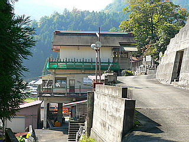
1階は倉庫、2階には小さなお地蔵さんが並ぶ地蔵堂、そして3階も地蔵堂なのだがこちらにはブロンズ製の大きなお地蔵さんがおわしていた。
壁にはぬりえ供養という謎の奉納が。
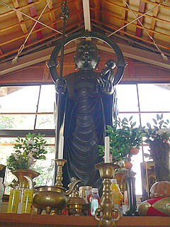 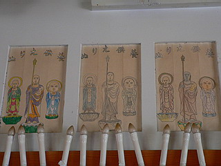
地蔵堂の周囲には多くの石仏が並んでいる。
さらに味のあリ過ぎる弘法さんも。
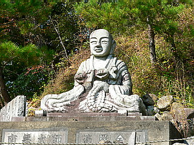 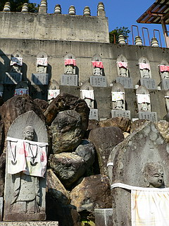
で、最も奥にある大師堂。
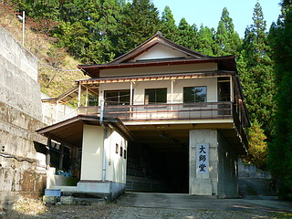
一見倉庫のような1階部分にはつのだ☆じろうチックなイラストの女性が合掌するタイルが延々と…
そしてその対面には大師サマのパネルがこれまた延々と。
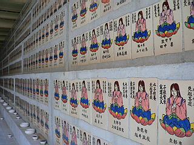 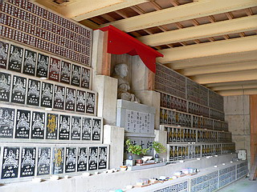
改めて気づいたが、結局ここの建物のほとんどの天井はH鋼の梁がむき出しだった。
天井板を張るなんてチンケなこ事よりももっと大事な事があるんだよお！…という超ホットなメッセージを投げかけられているように思えて仕方がなかった。
で、その大事なこととは何か…それは深遠すぎて私には判らなかったが、前へ前へ、といったウルトラ前のめりな疾走感だけはバッキュンバッキュンに感じることが出来ました。
これにて濃すぎる中風寺奥の院巡りは完了。
お疲れ様でした〜。
あまりにも素晴らしすぎる奥の院巡りに感動したので再び中風寺に戻りお寺の方にその感動の様をぶつけてみた。
まるでミスター味っ子の味皇様並みに素晴らしい、素晴らしいを連発していたら逆に先代の住職の奥様がドン引きしてました…
…ウルトラ前のめりなのは私の方だったようです…
それはともかく先代の住職の奥様から色々な話を伺うことが出来た。
件の奥の院の百観音堂は昭和50年代に建設されたという。
何でも今は亡くなってしまった先代の住職ひとりのアイデアで造られたのだというから驚きだ。
決して生コン屋のプラントを買い取った訳ではないのだ。
ちなみにあの味のあり過ぎる素敵な石仏も先代住職が手がけたモノだという。
最初は見よう見まねで始めたという石彫だが、段々上達していくにつれ大型の石仏を手がけていった…という奥様のハナシに突っ込みを入れるつもりは毛頭ないが、上達…してましたか？
いずれにせよ建物の設計アイデアから石仏彫刻まで、まさに八面六臂の大活躍！現代のダヴィンチ！…は言い過ぎか…
先代住職は小豆島出身。最初は田舎の名もなき小さな寺だったので随分苦労されたようだ。
しかしその努力の甲斐あって、今や中風避けの寺として最盛期には観光バスが押し寄せるまでの名刹にまでしたのである。
そして最も気になっていた事を聞いてみた。
それは例の七条大滝の事である。
やはり以前はあの滝に水を流していたそうである。
名前は失念したが近在の霊地でわざわざありがたい水を汲んできたそうだ。
現在は人手不足のため流すことはないようで返す返すも残念である。
見たかったなあ〜聖水の放水。
さて、そんなこんなでトレビアン攻撃をし続けていたら、奥様が別院もあるから見ていったらどうか、と仰る。
もっちろん見にいきますとも！！！！
…という訳で奥の院とは逆方向に3キロ近く離れた別院に到着。
こちらは富士観音霊場という額が掲げられている。
見たところこちらには建築的なギミックはないようだ。
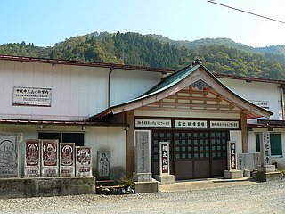
中に入ってみると新建材バリバリの内装が昭和末期を髣髴とさせる建物だった。
さて。気になるのは堂内に大書された富士山頂上お砂ふみの文字。そしてズラリと並んだ石像の数々。
富士山のお砂踏みって何だ？まあ、あそこも聖域だか砂を踏めばありがたいっちゃーありがたいんだろうけど…
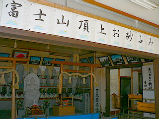 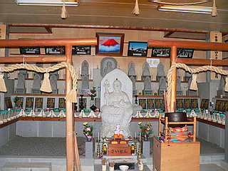
とはいえ富士山の山頂に霊場があるとは聞いたことがないし、一体どういうこと？
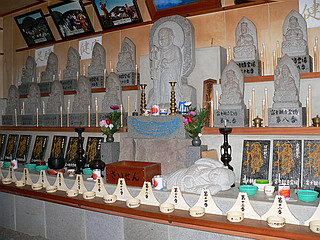
ナンと富士山の山頂で10年間修行された観音サマの石像が下山してきて、今この地におられるのだという。
うむ〜。10年間修行といえば聞こえはいいが、信仰心のない人から見ればコレって放置…いやいや修行なんでしょう。
観音サマ御一行の下山が昭和60年。つまり富士山で観音サマ達が熟成、じゃなくて放置、じゃなくて修行されてた頃に奥の院の建設が進んでいた、という塩梅。
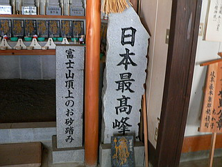 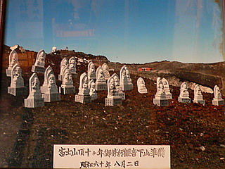
日本最高峰、霊峰、ゴミが多くて世界遺産にはなれなかったけどありがたさ満点の富士山の砂を踏ませてもらう。
ウス。これで富士山に登らないで済んだぞ。
人気のない堂内には様々な祈願証が。
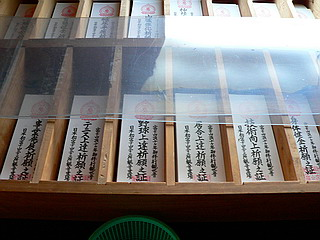 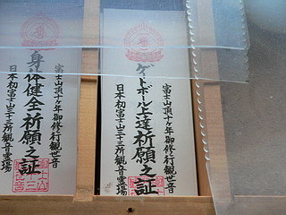
身体健全祈願はともかくゲートボール上達祈願とかテニスとか野球とか挙句の果てには糖尿平癒祈願とか、やけに具体的すぎやしませんか？
富士の霊峰もゲートボールとか見たことないでしょ、山の上だし。
まあ、それにしてもてんこ盛りのお寺でした。100点！
情報提供者はサマサマ太郎さんです
2006.11.
珍寺大道場 HOME